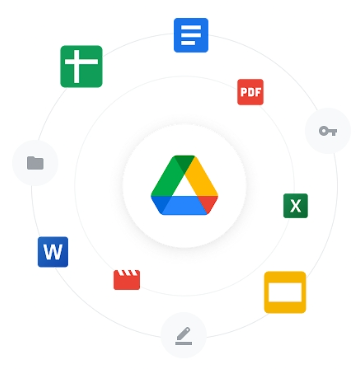

รองรับการทำงานบน Cloud Drive
ระบบบัญชี Rinukz GL สามารถทำงานร่วม Google Drive หรือ OneDrive ที่มีอยู่แล้ว เชื่อมต่อได้ทุกสาขาและทั่วโลกทันที
- ไม่ต้องจ่ายค่าเช่า Web/Cloud Server รายเดือน/รายปี
- ไม่ต้องจ้าง IT ดูแลระบบ
- Backup อัตโนมัติตลอด 24 ชม. — ฮาร์ดดิสก์พังก็ไม่สูญหาย ไม่ต้องซื้ออุปกรณ์ Backup เพิ่ม
- ทำงานบน ฟรี Cloud ได้เลย ไม่มีค่าใช้จ่ายแอบแฝง